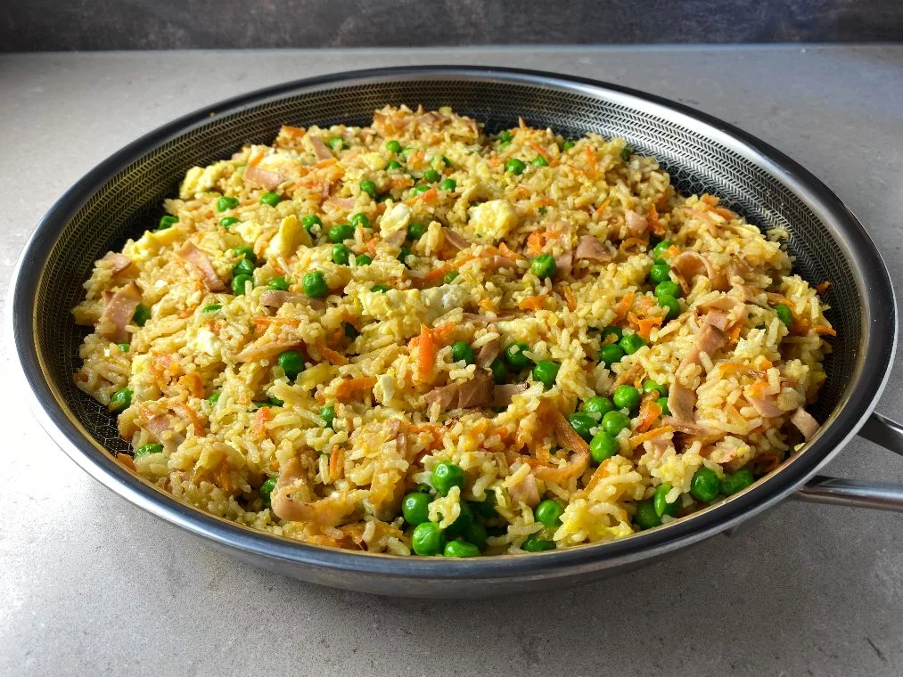

Fried Rice

- 3dl Rice
- 1 Carrot
- 1 Red pepper
- 150g Sweet peas
- 2 Green onions
- 2 tbsp vegetable oil
- Salt
- Pepper
- 2 tbsp Japanese soy sauce
- Cook the rice
- Peel the carrot and remove the seeds from the red pepper.
- Cut up the carrot, red pepper and sweet pees in slices.
- Fry the vegetables in a big frying pan for about 3 minutes. Season with salt and pepper.
- Add the rice to the frying pan and mix.
- Crack the eggs over the frying pan and mix until creamy.